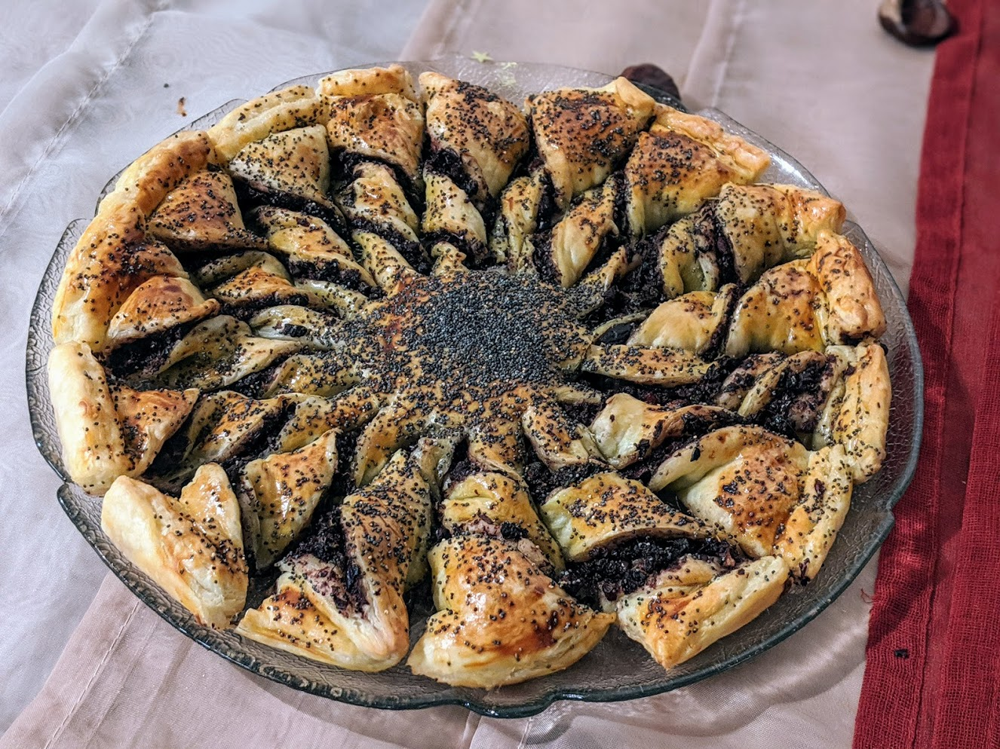

Tarte-soleil

Pour 6-8 personnes :
- Deux pâtes feuilletées
- De la tapenade, ou un autre truc à tartiner
- Un jaune d'œuf
- (Facultatif) Des graines de sésame ou de pavot
- Étaler une pâte feuilletée sur un plat à tarte recouvert de papier sulfurisé, et la tartiner d'une couche de tapenade (de quelques milimètres d'épaisseur) partout, à part à 2cm du bord.
- Humidifier les bords avec un peu d'eau (au pinceau ou du bout du doigt), recouvrir de la seconde pâte feuilletée, et appuyer sur le bord avec une fourchette pour que ça s'accroche bien.
- Poser un verre au centre de la pâte, et la couper en 12 (ou en 16, ou en 24, en fonction de la taille), en évitant le verre au milieu — donc la pâte doit rester en un seul morceau. Si cette étape est un peu difficile parce que c'est trop pâteux, laisser reposer le tout au frigo quelques minutes pour que la pâte feuilletée soit plus ferme et se laisse bien couper.
- Prendre le bout de chaque "tranche" entre deux doigts, poser le doigt sur le côté collé au centre, et retourner la tranche deux ou trois fois pour que ça prenne la forme d'une tarte-soleil (cf. photo). Bien sûr, chaque tranche doit être tournée dans le même sens, sinon c'est moche. Si un peu de garniture tombe sur les côtés, c'est pas très grave.
- Faire précauffer un four à 180°c. Badigeonner la pâte de jaune d'œuf, saupoudrer du sésame ou du pavot, enfourner une demi-heure environ (jusqu'à ce que ça soit bien doré et craquant).
Remarque : on peut faire ça avec n'importe quoi qui se tartine bien et qui va survivre à un passage au four. Du pesto rouge ou vert, ou même un truc à base de fromage peut probablement aller ; et c'est aussi possible de mettre du Nutella ou un mélange à base de chocolat ou de noix pour faire une version sucrée.
Retour à la liste des recettes